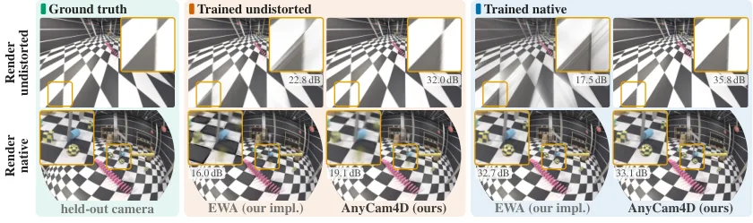
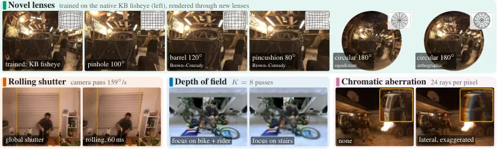
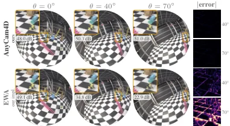
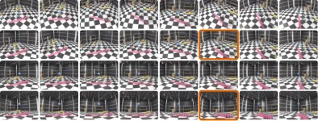
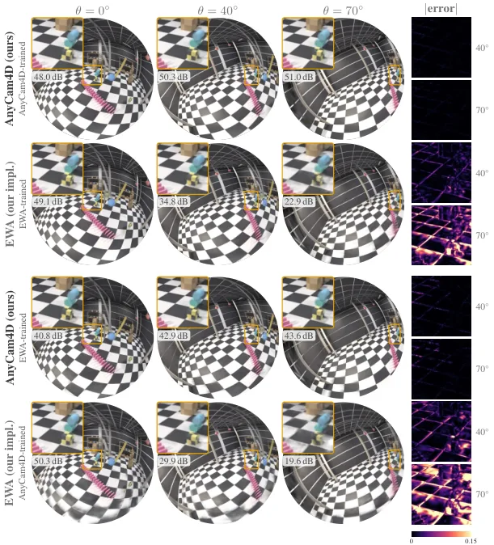

AnyCam4D：给原生 4D 高斯做基于光线的渲染，适配任意相机模型
AnyCam4D: Ray-Based 4D Gaussian Rendering for Arbitrary Camera Models
一句话：4D 高斯原本用不上光线渲染，是因为协方差开方不稳定；把 4D 协方差的平方根条件化之后，就能在原始鱼眼画面上训练、用任意镜头渲染，而且每步代价只比 EWA 高一点。
PSNR
PSNR
cost
PSNR
作者、单位与技术谱系 · Research context
作者与单位
研究脉络
- 4D Gaussian Splatting（4DGS）方法基座关系：表示与训练流程沿用：原生 4D 高斯、时间颜色、致密化与 30k 步训练日程都取自 4DGS，本文只替换投影/光栅化。[AnyCam4D §5.1 与参考文献 [43]]
- EWA splatting 与 unscented projection研究上游关系：被替换的机制：EWA 的屏幕空间膨胀与镜头 Jacobian 线性化正是本文要绕开的误差源。[AnyCam4D §3 与 §5.4]
- FreeTimeGS并发工作关系：对照与表示等价性论证：本文指出任何 FreeTimeGS 基元都可写成另一种参数化的 4D 高斯，故其渲染方法可套用。[AnyCam4D §5.2 与附录 S4.5]
合作网络
- UNED ↔ VologramsUNED（Madrid） → Volograms（Dublin）关系：共同署名（高校—公司）[arXiv 官方 HTML 首页]
- AnyCam4D 项目页Sascha Kirch → https://sascha-kirch.github.io/anycam4d/关系：论文给出的项目主页（含视频与补充材料）[arXiv 官方 HTML 首页项目地址]
- AnyCam4D ↔ gsplatAnyCam4D 渲染器 → gsplat关系：技术依赖（基线实现基于 gsplat）[AnyCam4D §5.1 与参考文献 [45]]
作者单位、两机构署名与项目页为首页事实；技术接续（4DGS 流程、EWA 被替换、FreeTimeGS 等价性）取自正文自述。论文未标通讯作者，未推断作者间导师或雇佣关系。
方法本质拆解 · What actually changed
沿用 4DGS 流程，只换投影与光栅化
训练步数、损失（L1 + 0.2 D-SSIM）、致密化与外观参数都沿用 4DGS，30k 步、3 个种子；改变的是投影与光栅化（光线求值）以及协方差的因子化方式。权重当然是从头训练，但不是新网络——没有任何学习得到的编码器或解码器，全部是显式高斯基元。
把数值约束写进参数化
新增约束是结构性的：4D 协方差被分解为时间块、空间块与交叉项，平方根必须满足条件化形式（连续、非奇异），并用 Potter 更新与三角因子维持；光线求值侧加最近点偏移与光线裁剪，避免近相机处数值爆炸。镜头模型（针孔/BC/等距/KB）作为标定输入约束投影，而不是让网络去学畸变。
渲染期支持新镜头与相机效果
推理端没有任何网络：解码后按每条光线聚合高斯，镜头模型可替换（针孔、桶形、枕形、180° 圆鱼眼），卷帘按行给时间与位姿、景深按对焦距离合成、色差做横向偏移。这些效果都不需要重新训练，但也因此只是「渲染近似」，不是物理成像模型。
让 4D 高斯的朝向变得可解
它改变的不确定性是「4D 协方差到几何参数的映射」：原来从协方差反解朝向/尺寸病态、梯度不稳，导致光线渲染不可用；条件化平方根把这个映射变成稳定可微的。局部结果靠 sigma 点投影接到光线空间；它没有做的是建模移动相机下的卷帘训练，也没有解决快速运动的时序歧义。
输入是原始（未去畸变）多视视频与标定镜头模型；改变的是 4D 高斯的协方差参数化与投影方式；动作为条件化平方根 + sigma 点光线求值；直接效果是原生鱼眼训练 +8.1 dB、跨镜头渲染且每步代价约 1.1× EWA。

结论与问题Conclusion & Motivation
核心结论
AnyCam4D 让原生 4D 高斯可以直接在原始（未去畸变）画面上训练，并用基于光线的光栅化渲染，从而不再为适配针孔模型牺牲视场或分辨率。技术上它解决的是「从 4D 协方差稳定恢复高斯朝向与尺寸」这个障碍：对协方差的一个平方根做条件化，再用 sigma 点做光线求值，使前向与梯度在 fp32 下都稳定。效果上，170° 合成鱼眼上原生训练在共同评分区领先去畸变训练 8.1 dB（裁剪到 95° 视场时仍领先 3.0 dB）；整帧口径下原生 33.0 dB 对裁剪模型 19.0 dB。把留出相机旋转 60–80° 后，相对路径追踪真值领先 EWA 6.2 dB。
动机与问题
广角与鱼眼相机在机器人、无人机与消费级采集里很常见，但动态高斯泼溅几乎都假设针孔，于是流程第一步是去畸变。去畸变不是免费的：要么裁掉边缘视场（170° 鱼眼有约 20% 的画面在发布的针孔版本之外），要么降分辨率，两者都损失可用于重建的信息。静态高斯泼溅已经用光线渲染摆脱了这个约束，但原生 4D 高斯的每个基元在时空中有朝向与尺寸，这些量只能从 11 维协方差里反解，而朴素的平方根分解在数值上不稳定（近奇异、符号不定），导致光线求值与梯度都不可靠。
方法Method
方法总览
方法分三块。第一，用「条件化的平方根」代替自由 Cholesky：对 4D 协方差做结构化因子分解（时间块 + 空间块 + 交叉项），用 Potter 型更新与三角因子保持数值稳定，从而稳定地取出方向、尺寸与 sigma 点。第二，光线求值：由 sigma 点构造光线并在光线空间做 EWA 式聚合，近相机处做裁剪（closest-point offset）避免数值爆炸。第三，外观与优化沿用 4DGS 的时间颜色与致密化流程，只把投影/光栅化换成光线版；另外把卷帘快门、景深、色差实现为渲染期效果，因此可以在训练时没见过的镜头上渲染。
关键技术细节
数值细节是这篇的实质：4D 协方差的平方根不是唯一，直接取 Cholesky 会随参数扰动跳符号，作者改为对协方差的一个平方根施加条件（conditioning），使因子在训练中连续演化，并用 sigma 点（无迹变换）把高斯投影到光线上，避免对协方差的线性化。近相机处加「最近点偏移」与光线裁剪，保证前向不出现非有限值；作者报告所有最终运行都没有出现非有限损失或参数，而这依赖该偏移。渲染期效果各自独立：卷帘按行给时间与位姿，景深按两个对焦距离做合成，色差做横向偏移，都只在渲染时施加，不参与训练。

实验Experiments
实验设置
数据覆盖窄镜头到宽镜头四类：DyNeRF（3 个 300 帧场景、20 台训练相机、1352×1014、Brown–Conrady 镜头）、FreeTimeGS 的 6 段 SelfCap 片段（21–23 台相机、最高 1920×1080、BC 镜头）、DeepView（flames/truck/welder，150–900 帧、44 台相机 1280×960、Kannala–Brandt 鱼眼）、以及路径追踪的 Dynopsis（288 帧，同时用 BC 与 170° KB 渲染）。基线是作者自己重实现的 EWA（与 4DGS 同标定、同初始化、同优化器、同致密化，DyNeRF 上 34.05 dB 对 4DGS 报告的 33.49 dB），外加「EWA 穿过原生镜头」这一自设对照。训练统一 30k 步、L1+0.2 D-SSIM、3 个种子。
实验数字与比较
鱼眼上原生训练的优势分两部分：分辨率与视场。Dynopsis KB 若保留 150° 视场，中心焦距从 364 px 掉到 107 px，原生训练在共同评分区领先 8.1 dB；若裁到 95° 以保住焦距，去畸变模型在该视场从 23.6 升到 29.6 dB，原生仍领先 3.0 dB，而裁剪模型无法绘制未训练的周边（整帧 19.0 dB 对 33.0 dB）。温和镜头收益小：BC 上焦距只降 1.45×、原生领先 0.8 dB；DeepView 1.23×、0.6 dB；DyNeRF +0.52 dB、SelfCap −0.15 dB。渲染器对比：BC 镜头两者打平（除 EWA 在 flame_steak 上 6 次里 2 次后期崩溃），Dynopsis KB 上针孔 EWA 在离轴 79° 处落后 5.75 dB，换成原生镜头的 Jacobian 后差距缩到 0.68 dB；旋转 60–80° 时 EWA 掉到 12–35 dB，AnyCam4D 保持 29–58 dB。
消融/失败边界
它的「消融」是把两个因素拆开：在原始图训练 vs 用光线渲染。结果是——静态机位下二者几乎不可分（BC 镜头打平、DeepView 上 EWA-nat 甚至在 welder 上领先 0.9 dB），收益主要来自原生训练；而把相机绕中心旋转后，EWA 的误差才暴露：屏幕空间膨胀（固定像素模糊、角度上却在变）贡献 20–50% 的下降，镜头线性化贡献其余。这同时界定了它的适用范围：静态稠密机位会让 EWA 的误差被训练吸收，因此「两者打平」不等于「EWA 足够准」。其他失败边界：快速运动仍然弱（Dynopsis KB 上运动像素 17–22 dB，静态 30–36 dB）；相机平面裁剪把镜头限制在 180° 以内；卷帘/景深/色差只做渲染期效果，没有训练期建模。
局限与迁移Limitations & Transfer
局限与待核验
作者明确承认：所有采集装置都是静态的（方法本身不需要，但实验没验证移动相机）；相机效果只在渲染期，移动相机还需要按行卷帘的训练；相机平面裁剪把镜头限制在 180°；快速运动效果差。我们待核验：与已发表方法的对比沿用各数据集自己的划分、帧范围、相机模型与 SSIM 变体，因此跨论文数字不宜直接比；「不同图像上的分数不可比」作者自己强调了，但表 4 里仍并列呈现，读表时需注意；另外 4DGS 类方法的运行成本只报相对倍数（1.06–1.13× 渲染+反传），未给绝对显存/时间预算，部署可行性需另测。
与你研究路线的关系
对我们的直接价值是「广角/鱼眼输入不要先去畸变」这一条：如果前端用的是鱼眼或全景相机，去畸变会同时损失视场与中心分辨率，而这两者恰好是几何初始化与深度先验最需要的。可迁移的模块是条件化平方根 + sigma 点光线求值这一套数值工具，它同样适用于任何需要从协方差反解朝向的 4D/各向异性表示（比如带时间维的高斯地图）。另一个可迁移的是实验设计：自实现基线 + 「基线穿过原生镜头」的对照，把「表示收益」与「输入收益」分开，这正是我们做 A/B 时该有的严谨度。下一步实验：在我们自己的鱼眼/广角数据上，比较「去畸变 + 针孔」与「原生光线」两种前端对下游位姿/深度的影响，并用旋转相机的一致性测试作为敏感探针。







